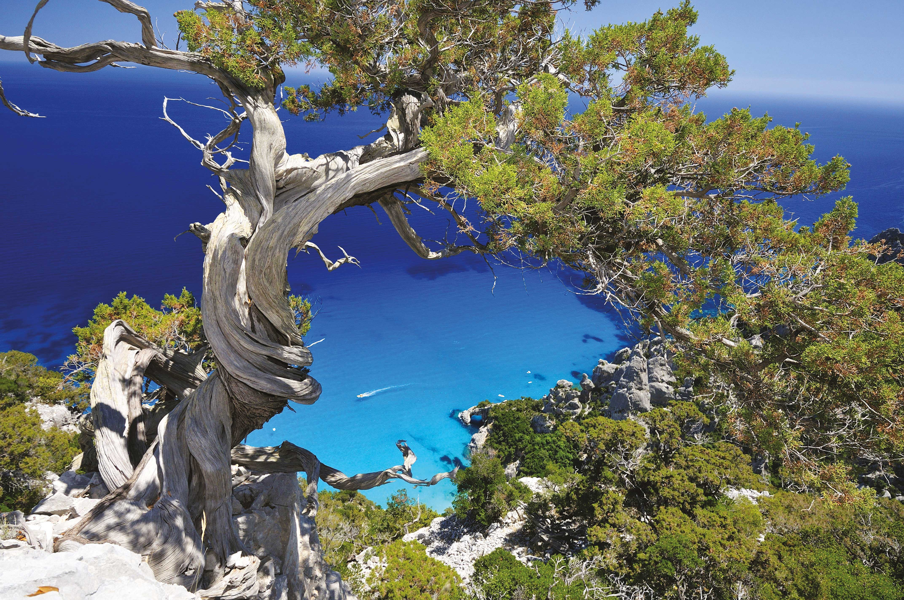
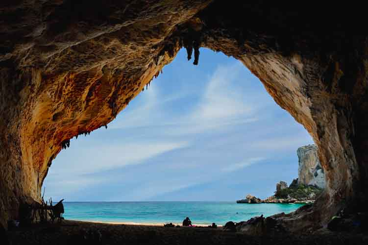
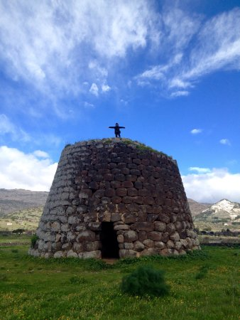
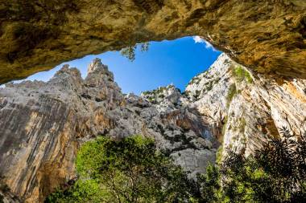

Sardegna




La vita in Sardegna è forse la migliore che un uomo possa augurarsi:
ventiquattro mila chilometri di foreste, di campagne, di coste immerse in un mare miracoloso dovrebbero coincidere con quello che io consiglierei al buon Dio di regalarci come Paradiso.
I sardi a mio parere deciderebbero meglio se fossero indipendenti all'interno di una comunità europea e mediterranea.
cit. Fabrizio De Andrè
Situata al centro del Mediterraneo, con un territorio prevalentemente montuoso ma privo di alte vette, la Sardegna regala al visitatore un ambiente naturale unico, nello stesso tempo aspro e dolcissimo.
L’uomo, infatti, è in certe zone quasi una rara presenza; vaste superfici sono rimaste magicamente intatte, abitate da cervi, cavalli selvatici e grandi rapaci e sono ricche di piccole zone desertiche, stagni e boschi rigogliosi con alberi anche millenari.
Il mare regna incontrastato con i suoi colori e si insinua nelle calette tortuose, lungo le coste e le spiagge.
Nel contesto d'Italia, la regione costituisce veramente un'area a sé: persino la sua lingua, il sardo, è considerato un idioma a tutti gli effetti.
- Cagliari.
Città e porto della Sardegna; capoluogo di provincia e della regione, è situata al centro dell'omonimo golfo, tra stagni costieri e saline, al margine meridionale della pianura del Campidano. L'economia locale si basa sull'attività del porto, che è il più importante dell'isola, e su varie attività industriali (stabilimenti alimentari, chimici, petrolchimici, tessili).
La provincia, che comprende 109 comuni nella parte meridionale dell'isola, è ricca di miniere (nei territori del Sulcis e dell'Iglesiente) da cui si estraggono combustibili fossili, piombo e zinco. Voci importanti dell'economia locale sono lo sfruttamento delle numerose saline nella zona costiera e le attività legate al turismo e alla pesca.
-
Nuoro.
Città e capoluogo di provincia della Sardegna centrorientale; è situata a 532 m su una dorsale che scende dal monte Ortobene (955 m), a nord della regione della Barbagia, in corrispondenza dello spartiacque fra il Tirreno (che dista circa 30 km), a est, e il mar di Sardegna, a ovest. Le prevalenti attività economiche della provincia, che comprende cento comuni ed è per due terzi collinare e per il resto montuosa, sono l'agricoltura (cereali, ortaggi, viti, frutta) e la pastorizia, che alimenta l'industria casearia. Sviluppati sono l'artigianato e il turismo.
-
Oristano.
Città e capoluogo di provincia della Sardegna occidentale; sorge nel Campidano, cioè la pianura alluvionale del Tirso, fra la riva sinistra del fiume e lo stagno di Santa Giusta, a 4 km dal golfo che prende il nome dalla città. La città è un importante mercato agricolo, con industrie di trasformazione e un porto-canale. La provincia, che comprende 78 comuni ed è per più di metà collinare e per il resto pianeggiante, è dedita all'agricoltura (viti, ulivi, ortaggi, allevamento), all'industria (olearia, conserviera, vinicola), alla pesca e all'artigianato.
-
Sassari.
Città e capoluogo di provincia della Sardegna, situata su un pianoro calcareo che digrada verso il golfo dell'Asinara, nella estremità nordoccidentale dell'isola. La città è il principale mercato per i prodotti del circostante territorio agricolo, oltre che attivo centro commerciale, con industrie nei settori alimentare (molini, pastifici, oleifici, caseifici, aziende vinicole), poligrafico, farmaceutico, tessile, metalmeccanico, del legno e del vetro. Caratteristica è la lavorazione del sughero. La provincia di Sassari, che comprende 89 comuni ed è collinare per tre quarti della sua superficie, è dedita all'agricoltura (cereali, ulivi, viti, agrumi, ortaggi, frutta, querce da sughero), all'allevamento di ovini, alla pesca, alla lavorazione del sughero. A Porto Torres si trovano inoltre un importante polo industriale, stabilimenti alimentari, chimici, metalmeccanici e tessili. Attivo è anche il turismo balneare nei numerosi e noti centri costieri. Caratteristiche sono le lavorazioni artigianali di arazzi, tappeti e ceramiche.